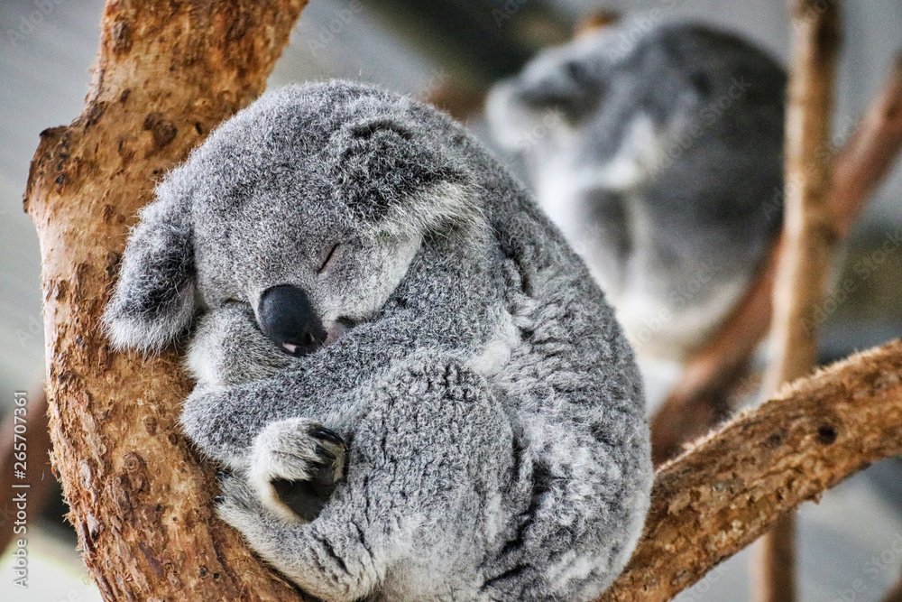
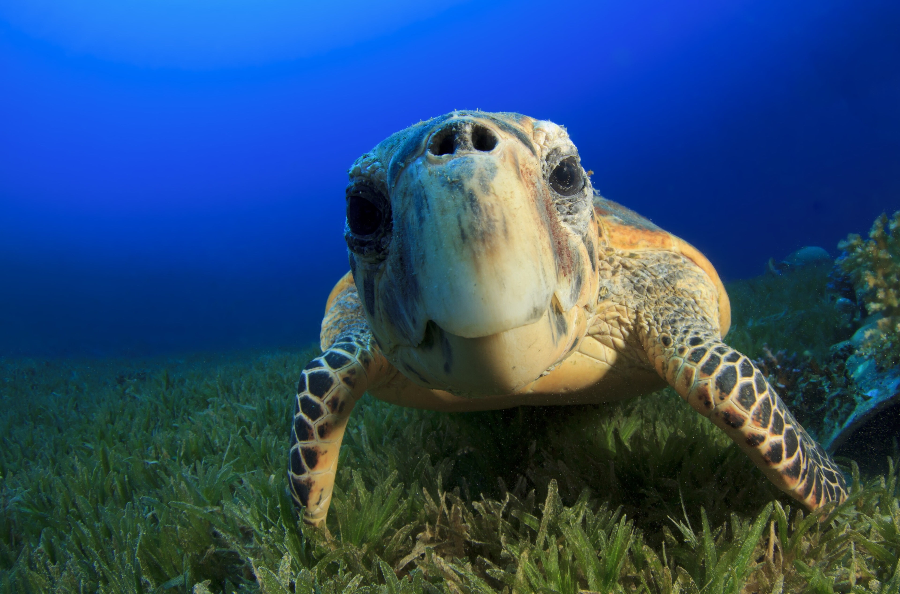
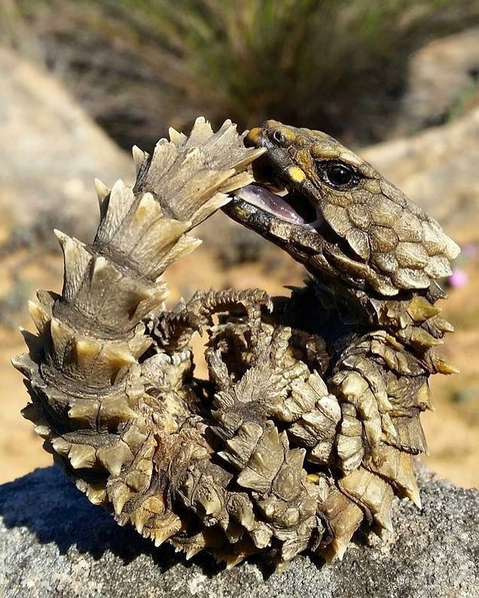
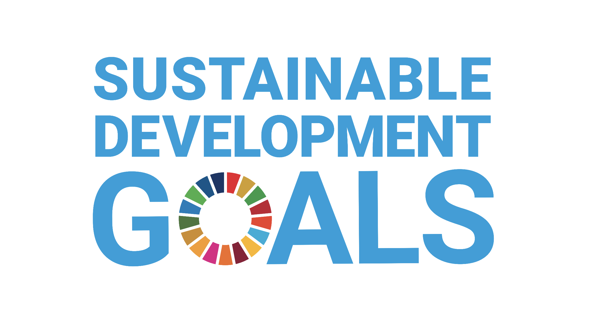

5~10種類程度動物を想像してみてください。
そのほとんどが絶滅に危機に瀕しています。
動物たちを守ることは生命の歴史を守ること、また複雑に絡み合って形成され支えられている我々の暮らしを守ることにつながります。
絶滅の危機のリスト
RED LIST
絶滅危惧種とは、絶滅のおそれが生じている野生生物のことを指します。 その原因には、開発によって生息地が減少したり、密猟などの乱獲や、環境汚染などで生息数を大きく減らしたことなどが挙げられます。また、近年は地球温暖化による生息環境の変化や消失、人間が持ち込んだ外来生物などによる影響も深刻になっています。
絶滅のおそれのある野生生物をリストアップしまとめたものを「レッドリスト」と呼ばれ「レッドリスト」はスイスのグランに本部を置く、IUCN（国際自然保護連合）により発表されています。
そのIUCNレッドリストには現在116,177種が掲載されています
レッドリストは、失われつつある地球の自然の貴重さを公に示す、一つの大きな目安です。どのような地域の自然保護にも、役立つ可能性を秘めています。レッドリストをただのリストで終わらせるか、自然保護活動の基盤として活用するか。その価値は、私たち次第で決まります。
動物たちの今
Endangered Animal
Mammal
Reptiles
Birds

Amphibians
Animal ProtectionとSDGs
環境保全に取り組む私達の取り組みは、17あるSDGsのゴール、その全てにかかわっています。
とりわけ、あらゆる問題の「基礎」にあたる環境分野、
「目標13：気候変動に具体的な対策を」
「目標14：海の豊かさを守ろう」

「目標15：陸の豊かさも守ろう」
これらの分野でそれぞれ求められているゴールは、いずれも相互に関係し、
総合的に実現を目指してまいります。
Animal Protection
